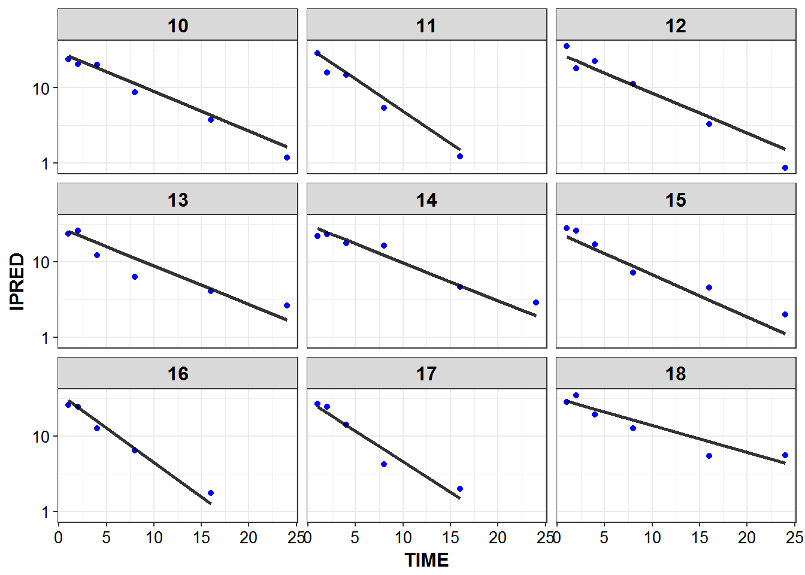
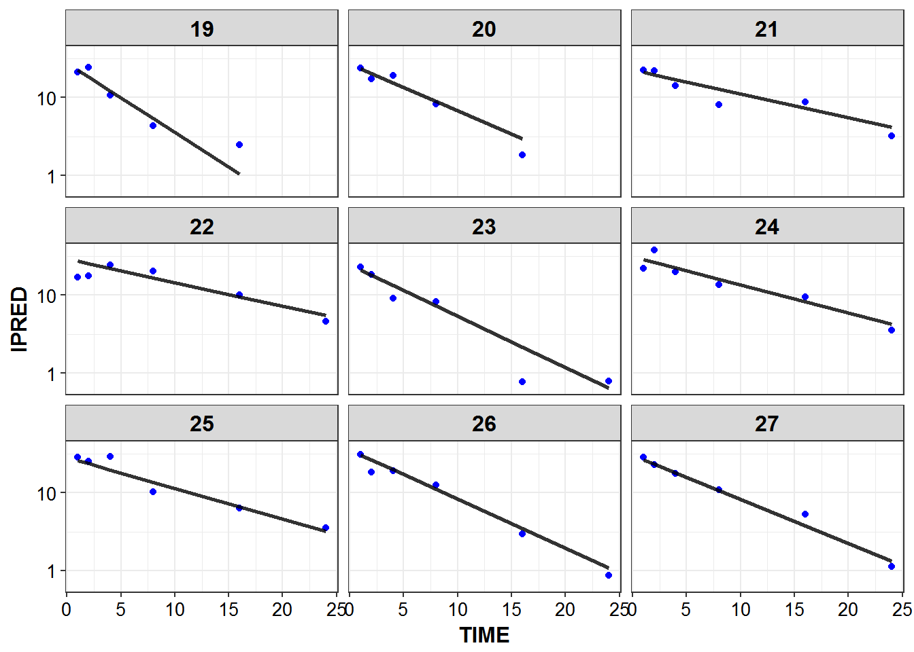
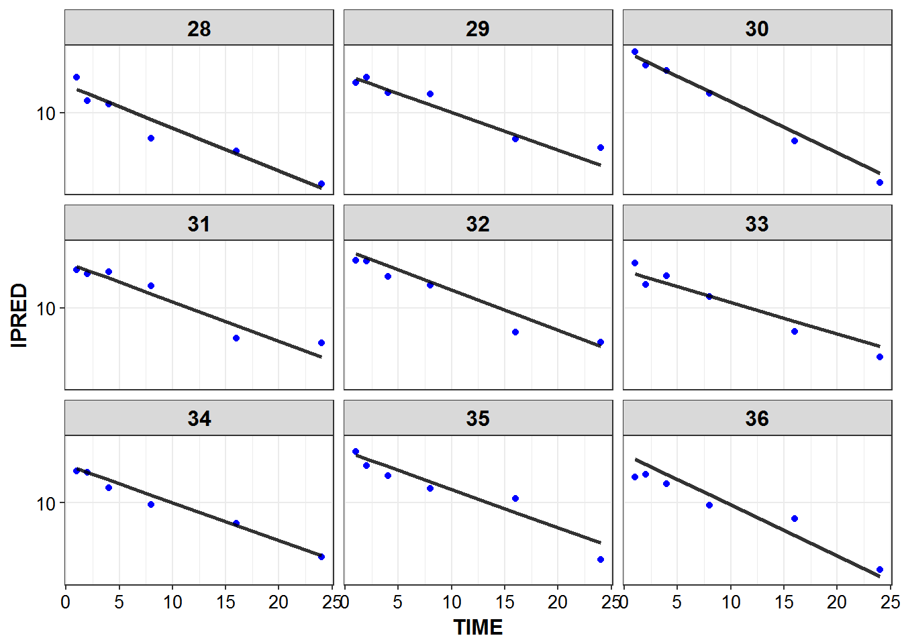
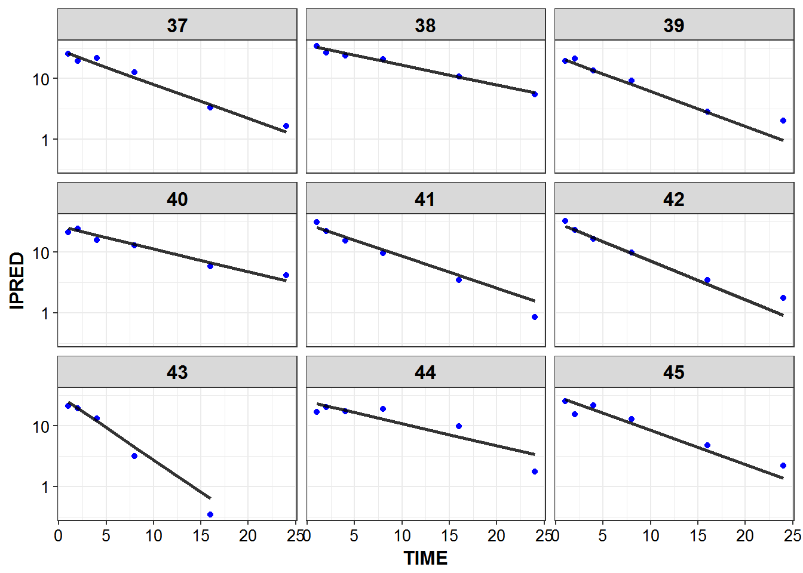
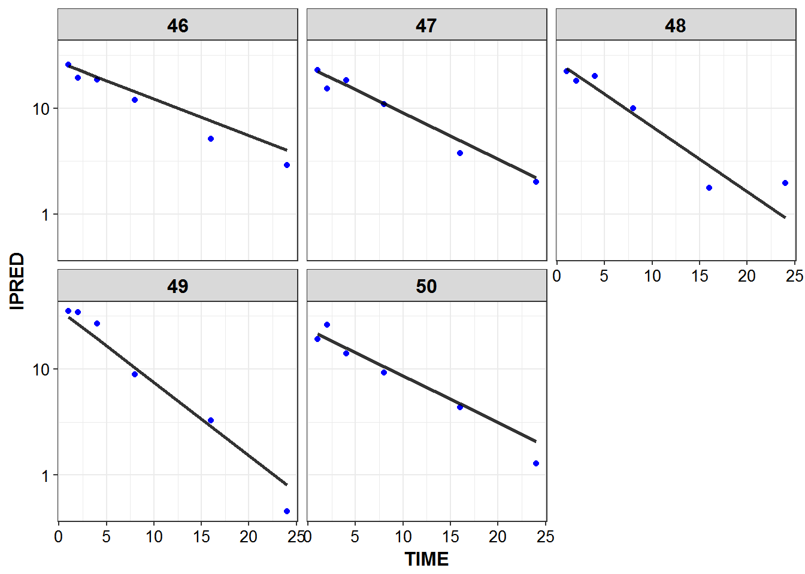

1 Dataset Creation
library(knitr)
library(PKPDmisc)
library(tidyverse)
library(mrgsolve)source("../scripts/model_details.R")models <- source("../models/models.R")$value
#> model dir set to C:/Users/devin/Documents/Repos/simplest_bayes/models
#> cache location set to C:\Users\devin\Documents\Repos\simplest_bayes\models\.modelcache
#> Loading model from cache.1.1 Generate data for mrgsolve
start with a baseline of having 50 individuals worth of data, can scale to different amounts of individuals later
NIDS <- 50demogs <- data_frame(ID = 1:NIDS)for_dosing <- demogs %>%
mutate(
CMT = 1,
EVID = 1,
TIME = 0,
AMT = 1000,
RATE = 1000
) one_cmt_iv <- models$use("one_cmt_iv")1.2 Model Details
mrgsolve::see(one_cmt_iv)
#>
#> Model file: one_cmt_iv.cpp
#> [PARAM] @annotated
#> CL : 4 : Clearance (L/hr)
#> V : 35 : Volume (L)
#>
#>
#> [CMT] @annotated
#> CENT : Central compartment (mg)
#>
#> [PKMODEL]
#> ncmt=1, trans=11
#>
#> [MAIN]
#> double CLi = CL*exp(nCL);
#> double Vi = V*exp(nV);
#>
#>
#> [OMEGA] @annotated @correlation @block
#> nCL : 0.1 : Random effect on CL
#> nV : 0.4 0.04 : Random effect on V
#>
#> [SIGMA] @annotated
#> PROP : 0.04 : Proportional error
#> // so don't get into issues with estimating via multiplicative error only
#> ADD : 0.5 : Additive residual error
#>
#> [TABLE]
#> double IPRED = CENT/Vi;
#> double DV = CENT/Vi*(1+PROP) + ADD;
#>
#> [CAPTURE] @annotated
#> DV : plasma concentration (mg/L)
#> IPRED : Individual predicted plasma concentration (mg/L)
#> CLi : Individual Clearance (L/hr)
#> Vi : Individual Volume (L)one_cmt_iv %>%
model_details %>%
filter(block != "CAPTURE") %>%
kable()| block | name | descr | unit | options | value |
|---|---|---|---|---|---|
| PARAM | CL | Clearance | L/hr | . | 4.00 |
| PARAM | V | Volume | L | . | 35.00 |
| CMT | CENT | Central compartment | mg | . | 0.00 |
| OMEGA | nCL | Random effect on CL | . | . | 0.10 |
| OMEGA | nV | Random effect on V | . | . | 0.04 |
| SIGMA | PROP | Proportional error | . | . | 0.04 |
| SIGMA | ADD | Additive residual error | . | . | 0.50 |
simulated_data <- one_cmt_iv %>%
data_set(for_dosing) %>%
mrgsim(end = 24, delta = 0.25) %>% as_data_frame1.3 Predicted Profiles
simulated_data %>%
filter(IPRED > 0.1) %>%
ggplot(aes(x = TIME, y = IPRED, group = ID)) +
geom_line(size = 1.05, alpha = 0.8) + theme_bw() +
base_theme() + scale_y_log10()
1.4 Real world sampling and LLOQ
sample_times <- c(1, 2, 4, 8, 16, 24)
LLOQ <- 0.1
sampled_data <- simulated_data %>%
filter(TIME %in% sample_times, DV > LLOQ) Show which, if any, timepoints have bql values and determine percent bql
sampled_data %>%
count(TIME) %>%
mutate(baseline = first(n),
perc_bql = 100 - n/baseline*100) %>%
filter(perc_bql > 0) %>%
select(TIME, perc_bql) %>% kable()| TIME | perc_bql |
|---|---|
| 24 | 14 |
1.5 IPRED and DV vs TIME for all individuals at sampled times
list_plots <- sampled_data %>%
mutate(PNUM = ids_per_plot(ID)) %>%
split(.$PNUM) %>%
map(~
ggplot(., aes(x = TIME, y = IPRED, group = ID)) +
geom_point(aes(y = DV), color = "blue") +
geom_line(size = 1.05, alpha = 0.8) + theme_bw() +
base_theme() + facet_wrap(~ID) +
scale_y_log10()
)
print_plots(list_plots)





#> [[1]]
#> NULL
#>
#> [[2]]
#> NULL
#>
#> [[3]]
#> NULL
#>
#> [[4]]
#> NULL
#>
#> [[5]]
#> NULL
#>
#> [[6]]
#> NULLdevtools::session_info()
#> Session info --------------------------------------------------------------
#> setting value
#> version R version 3.3.2 (2016-10-31)
#> system x86_64, mingw32
#> ui RTerm
#> language (EN)
#> collate English_United States.1252
#> tz America/New_York
#> date 2016-12-06
#> Packages ------------------------------------------------------------------
#> package * version date
#> assertthat 0.1 2013-12-06
#> backports 1.0.4 2016-10-24
#> bookdown 0.2 2016-11-12
#> codetools 0.2-15 2016-10-05
#> colorspace 1.2-7 2016-10-11
#> DBI 0.5-1 2016-09-10
#> devtools 1.12.0 2016-06-24
#> digest 0.6.10 2016-08-02
#> dplyr * 0.5.0 2016-06-24
#> evaluate 0.10 2016-10-11
#> ggplot2 * 2.1.0.9001 2016-11-07
#> gtable 0.2.0 2016-02-26
#> highr 0.6 2016-05-09
#> htmltools 0.3.5 2016-03-21
#> httpuv 1.3.3 2015-08-04
#> knitr * 1.15 2016-11-09
#> labeling 0.3 2014-08-23
#> lazyeval 0.2.0 2016-06-12
#> magrittr 1.5 2014-11-22
#> memoise 1.0.0 2016-01-29
#> mime 0.5 2016-07-07
#> miniUI 0.1.1 2016-01-15
#> mrgsolve * 0.7.6.9029 2016-12-06
#> munsell 0.4.3 2016-02-13
#> overseer * 0.0.1 2016-12-06
#> PKPDmisc * 0.4.4.9000 2016-11-02
#> plyr 1.8.4 2016-06-08
#> purrr * 0.2.2 2016-06-18
#> R6 2.2.0 2016-10-05
#> Rcpp 0.12.8 2016-11-17
#> RcppArmadillo 0.7.500.0.0 2016-10-22
#> readr * 1.0.0 2016-08-03
#> rmarkdown 1.2 2016-11-21
#> rprojroot 1.1 2016-10-29
#> scales 0.4.0.9003 2016-11-07
#> shiny 0.14.2 2016-11-01
#> stringi 1.1.2 2016-10-01
#> stringr 1.1.0 2016-08-19
#> tibble * 1.2 2016-08-26
#> tidyr * 0.6.0 2016-08-12
#> tidyverse * 1.0.0 2016-09-09
#> withr 1.0.2 2016-06-20
#> xtable 1.8-2 2016-02-05
#> yaml 2.1.13 2014-06-12
#> source
#> CRAN (R 3.3.2)
#> CRAN (R 3.3.2)
#> CRAN (R 3.3.2)
#> CRAN (R 3.3.2)
#> CRAN (R 3.3.2)
#> CRAN (R 3.3.2)
#> CRAN (R 3.3.2)
#> CRAN (R 3.3.2)
#> CRAN (R 3.3.2)
#> CRAN (R 3.3.2)
#> Github (hadley/ggplot2@70c3d69)
#> CRAN (R 3.3.2)
#> CRAN (R 3.3.2)
#> CRAN (R 3.3.2)
#> CRAN (R 3.3.2)
#> CRAN (R 3.3.2)
#> CRAN (R 3.3.2)
#> CRAN (R 3.3.2)
#> CRAN (R 3.3.2)
#> CRAN (R 3.3.2)
#> CRAN (R 3.3.2)
#> CRAN (R 3.3.2)
#> Github (metrumresearchgroup/mrgsolve@d92f31a)
#> CRAN (R 3.3.2)
#> local
#> Github (dpastoor/PKPDmisc@beae2a6)
#> CRAN (R 3.3.2)
#> CRAN (R 3.3.2)
#> CRAN (R 3.3.2)
#> CRAN (R 3.3.2)
#> CRAN (R 3.3.2)
#> CRAN (R 3.3.2)
#> CRAN (R 3.3.2)
#> CRAN (R 3.3.2)
#> Github (hadley/scales@d58d83a)
#> CRAN (R 3.3.2)
#> CRAN (R 3.3.2)
#> CRAN (R 3.3.2)
#> CRAN (R 3.3.2)
#> CRAN (R 3.3.2)
#> CRAN (R 3.3.2)
#> CRAN (R 3.3.2)
#> CRAN (R 3.3.2)
#> CRAN (R 3.3.2)